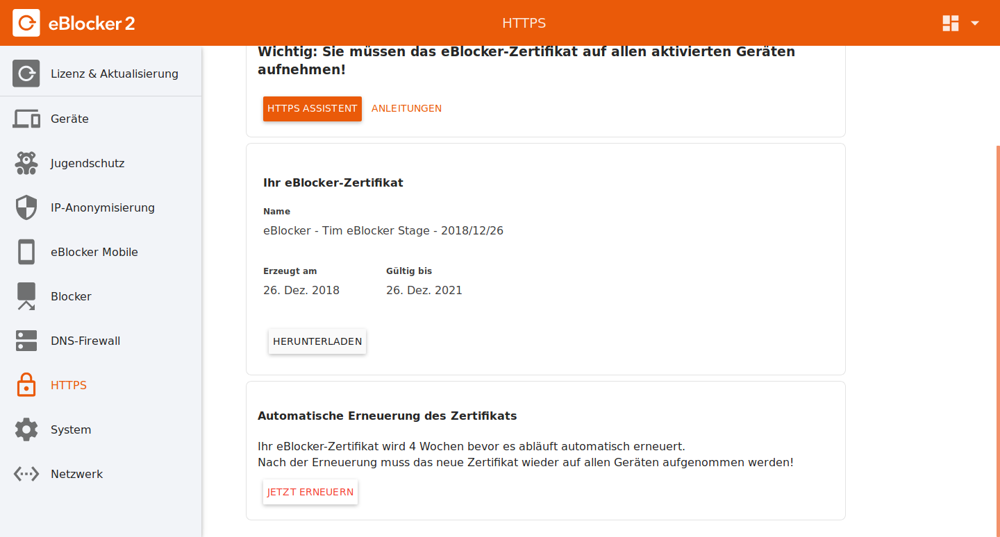

Deutsch | English
Nach Erstanschluss zeigt der eBlocker sein eBlocker Symbol nur auf HTTP Seiten an. Damit Sie das eBlocker Symbol auch auf HTTPS Seiten sehen können, müssen Sie die HTTPS Funktion im eBlocker aktivieren und das eBlocker HTTPS Zertifikat anschließend im gewünschten Gerät hinterlegen.
Wichtig: Die HTTPS Funktion steht nur dem eBlocker Pro und eBlocker Family zur Verfügung.
Für Geräte bei denen man das eBlocker Zertifikat nicht hinterlegen kann, sollten Sie die HTTPS Funktion vom eBlocker nicht aktivieren.
Die eBlocker HTTPS Funktion finden Sie in den eBlocker Einstellung > Menü HTTPS.
Wenn Sie die eBlocker HTTPS Funktion zum ersten Mal aktivieren, empfehlen wir Ihnen das eBlocker Zertifikat zu erneuern. Klicken Sie in dem Menü HTTPS auf den Reiter ZERTIFIKAT und dort unten auf den Button Jetzt erneuern.

Folgen Sie dem Assistenten und danach haben Sie ein neues eBlocker Zertifikat erstellt, welches ab dem Zeitpunkt der Erstellung gültig ist.
Nun können Sie das eBlocker Zertifikat hinterlegen. Wir empfehlen das eBlocker Zertifikat erst im Betriebssystem zu hinterlegen. Die meisten Browser, oder andere Programme, nutzen die Zertifikate aus dem Zertifikatsspeicher Ihres Betriebssystems. Einige der wenigen Programme, die einen eigenen Zertifikatsspeicher auf allen Betriebssystemen nutzen, sind der Browser Firefox, Cliqz, Seamonkey, oder auch das E-Mail-Programm Thunderbird.
Hier finden Sie eine Auflistung unserer Zertifikat FAQ Beiträge für die Betriebssysteme:
Aufnahme des eBlocker-Zertifikats
Warum ist das eBlocker Zertifikat so wichtig?
Stellen Sie sich das eBlocker Zertifikat wie einen Schlüssel vor. Sobald Sie die HTTPS Funktion vom eBlocker aktivieren, öffnet der eBlocker die verschlüsselten HTTPS / SSL Datenpakete. Der eBlocker entfernt Datensammler sowie datensammelnde Werbung und verschlüsselt das nun unverschlüsselte Datenpaket ein erneutes Mal. Ihr Browser, oder die App, erwarten ein verschlüsseltes Datenpaket. Damit Ihr Browser, oder die App, die vom eBlocker verschlüsselten Datenpakete wieder öffnen kann, benötigen Sie den passenden Schlüssel (das eBlocker Zertifikat).
Beachten Sie bitte auch unsere FAQ‘s.